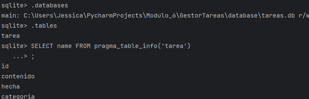
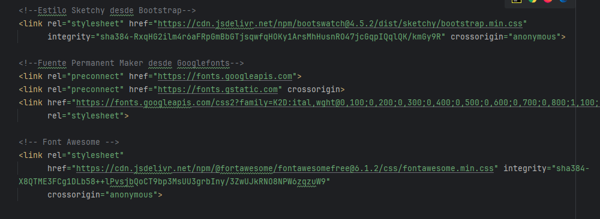
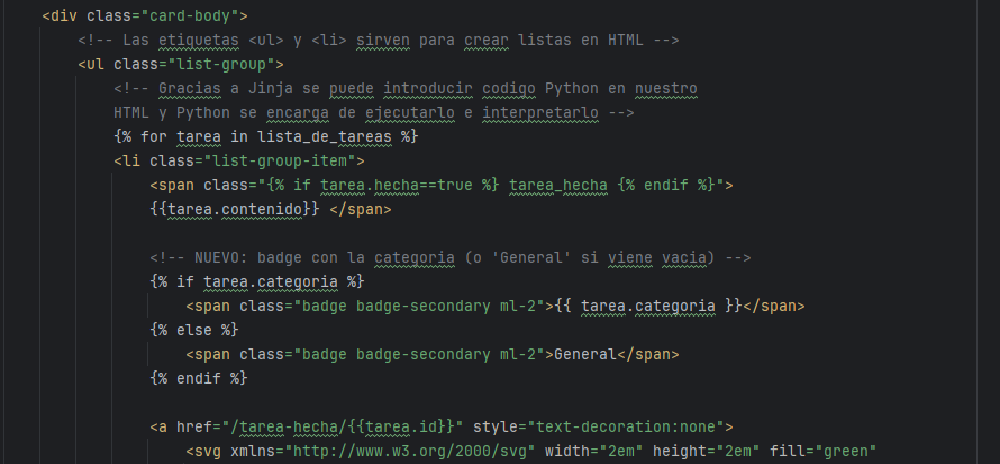

App con Python, Flask y SQLite3
App web con Flask y SQLite3 para gestión de tareas

Este proyecto consiste en el desarrollo de una aplicación web de gestión de tareas utilizando Flask como framework backend y SQLite3 como sistema de base de datos. El objetivo principal fue comprender y aplicar el flujo completo entre interfaz, lógica de servidor y persistencia de datos, implementando operaciones CRUD de forma funcional y sencilla.
Desarrollo de aplicaciones web con Flask, implementación de operaciones CRUD, conexión y gestión de bases de datos SQLite, y sincronización entre la lógica del servidor y la interfaz de usuario.
Python · Flask · SQLite3 · HTML · CSS
Durante el desarrollo se creó y verificó la estructura de la base de datos, comprobando la correcta creación de la tabla de tareas y sus campos. A través de la aplicación se pudieron crear, visualizar, modificar y eliminar tareas, validando en todo momento que los cambios realizados desde la interfaz gráfica se reflejaban correctamente en la base de datos mediante consultas directas desde el terminal.


